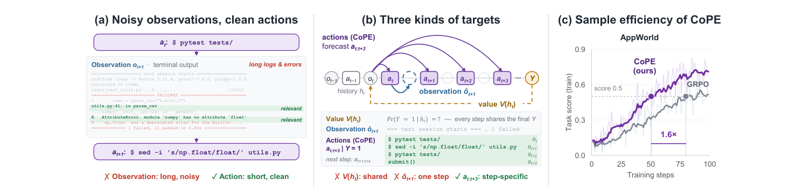
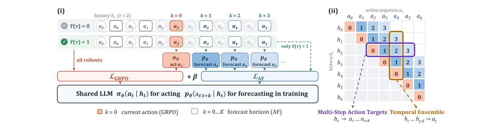

Abstract
Training language agents is bottlenecked by the high cost of long-horizon rollouts, yet standard agentic reinforcement learning (RL) learns only from a terminal scalar reward, leaving the supervision in intermediate steps largely unused. Prior work exploits this supervision through value targets that estimate per-step success probabilities or observation targets that fit environment response. Both are hard to construct well: (1) value targets come from the same single scalar signal for each step in the trajectory, and (2) observation targets, such as web pages and terminal logs, are long and noisy and reach only one step ahead. We propose CoPE, which adds a third kind of multi-step action targets. On successful on-policy trajectories, CoPE trains the policy backbone to generate the action sequences that follows each history. Each action is also supervised when forecast from the preceding histories, forming a temporal ensemble that the shared backbone absorbs during training, and this enables acting and forecasting to co-evolve. The policy still acts one step at a time at inference, with no overhead. Across five benchmarks (ALFWorld, ScienceWorld, WebShop, τ2-bench, and AppWorld), CoPE (1) achieves stronger aggregate performance than GRPO and RL baselines with predictive auxiliary targets across simulated environments, while improving overall performance on both realistic applications; (2) delivers up to 1.9× and 2.0× higher sample efficiency than ECHO and GRPO, respectively, on ScienceWorld; and (3) achieves these gains with a single policy backbone, without additional models, separate pretraining, or inference overhead.
Why action targets

Method

Acting helps forecasting
GRPO supervises each history ht with its single-step marginal only — it never asks the representation at ht to anticipate the actions that actually realize success. CoPE adds an action forecasting loss that fits the full horizon-K chunk, read directly off successful on-policy rollouts. No world model has to be learned to simulate future states: intermediate observations are marginalized out by the rollouts themselves.
Forecasting helps acting
Because the forecaster shares parameters with the acting policy, each action ends up supervised from several preceding histories at once — a temporal ensemble the backbone absorbs during training. The paper isolates this direction by training a separate LoRA forecaster that receives no policy gradient: explicit ensembling at test time improves GRPO and narrows its gap to CoPE, but adds nothing to CoPE, which already contains the information in a single forward pass.
Results
| Method | ALFWorld | WebShop | ScienceWorld | ||||||||
|---|---|---|---|---|---|---|---|---|---|---|---|
| Pick | Look | Clean | Heat | Cool | Pick2 | All | Score | Succ. | Score | Succ. | |
| Agentic prompting | |||||||||||
| Gemini-2.5-flash-lite | 82.6 | 36.8 | 37.8 | 20.0 | 21.4 | 48.9 | 46.0 | 7.8 | 6.5 | 13.9 | 15.0 |
| GPT-5-mini | 82.6 | 47.4 | 27.0 | 36.0 | 14.3 | 75.6 | 52.0 | 11.7 | 7.0 | 40.1 | 43.5 |
| GPT-5.5 | 97.8 | 100.0 | 91.9 | 88.0 | 89.3 | 93.3 | 93.5 | 66.1 | 56.5 | 66.8 | 79.0 |
| Qwen2.5-7B | 69.6 | 31.6 | 29.7 | 36.0 | 17.9 | 11.1 | 34.0 | 25.3 | 2.5 | −13.3 | 2.5 |
| Qwen2.5-7B + Reflexion | 84.8 | 26.3 | 51.4 | 44.0 | 32.1 | 55.6 | 54.0 | 21.9 | 4.0 | −3.7 | 6.0 |
| RL methods w/o auxiliary loss | |||||||||||
| RFT | 91.3 | 73.7 | 73.0 | 84.0 | 64.3 | 71.1 | 77.0 | 51.4 | 16.0 | −11.0 | 4.5 |
| GRPO | 100.0 | 73.7 | 94.6 | 84.0 | 89.3 | 88.9 | 90.5 | 84.1 | 64.5 | 52.8 | 64.5 |
| GRPO + EMPG | 97.8 | 57.9 | 89.2 | 88.0 | 89.3 | 95.6 | 89.5 | 84.3 | 67.5 | 48.2 | 46.5 |
| RL methods w/ auxiliary loss | |||||||||||
| RWML + GRPO | 100.0 | 89.5 | 89.2 | 92.0 | 96.4 | 84.4 | 92.0 | 81.2 | 64.0 | 39.4 | 65.0 |
| ECHO | 97.8 | 89.5 | 91.9 | 96.0 | 96.4 | 93.3 | 94.5 | 85.0 | 71.5 | 44.8 | 67.5 |
| CoPE | 100.0 | 100.0 | 97.3 | 96.0 | 89.3 | 91.1 | 95.5 | 89.4 | 77.0 | 53.4 | 72.5 |
Realistic applications
| Method | Telecom | Retail | Airline | Overall |
|---|---|---|---|---|
| Agentic prompting | ||||
| Qwen2.5 | 14.4 | 13.1 | 7.5 | 11.7 |
| ReAct | 13.1 | 13.8 | 10.0 | 12.3 |
| Published RL results | ||||
| RAGEN | 17.5 | 17.5 | 15.0 | 16.7 |
| Search-R1 | 15.6 | 15.0 | 10.0 | 13.5 |
| UserRL | 13.8 | 16.9 | 7.5 | 12.7 |
| InfoPO | 18.1 | 18.8 | 16.3 | 17.7 |
| Our controlled runs | ||||
| GRPO (ours) | 38.8 | 17.5 | 26.2 | 27.5 |
| CoPE | 40.6 | 29.4 | 16.2 | 28.7 |
| Method | Normal | Challenge |
|---|---|---|
| Agentic prompting | ||
| Qwen2.5 | 1.2 | 0.7 |
| ReAct | 10.7 | 2.6 |
| Published RL results | ||
| PPO† | 19.1 | — |
| RLOO† | 24.8 | — |
| GiGPO† | 25.7 | — |
| GRPO† | 24.8 | — |
| Our controlled runs | ||
| GRPO (ours) | 41.7 | 18.7 |
| CoPE | 55.4 | 22.5 |
CoPE improves over GRPO on every benchmark in aggregate. The gains are not uniform inside a benchmark: on τ2-bench the overall lift comes from a ~12-point gain on Retail against a drop on Airline, and on ALFWorld the Cool and Pick2 subtasks favour ECHO or RWML. The paper analyses both.
Cost
CoPE adds one supervised pass over successful rollouts, so its direct cost scales with the batch success rate. On ScienceWorld that pass adds 11% time per training step on average — while the shorter rollouts a better policy produces cut the measured end-to-end step time by 9% against GRPO. At inference the policy still acts one step at a time, with nothing extra to run.
BibTeX
@article{yu2026cope,
title = {Co-Evolving Acting and Forecasting for Language Agents},
author = {Yu, Haofei and Chen, Yixing and Zhao, Yining and Ye, Xuyan and
Liu, Yuxiang and Hua, Zhigang and Xie, Yan and Yang, Shuang and
You, Jiaxuan},
journal = {arXiv preprint},
year = {2026}
}